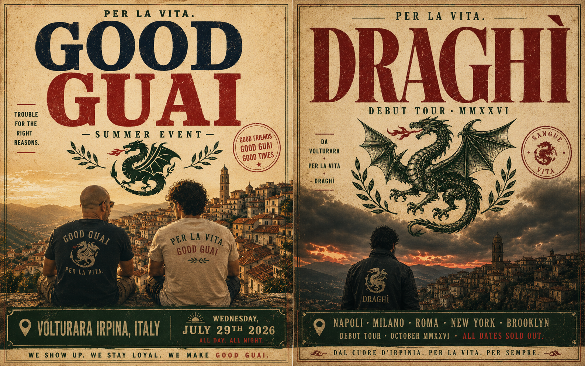
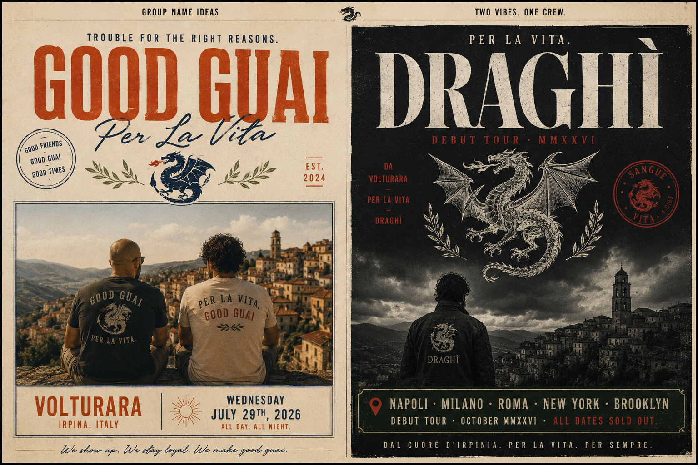
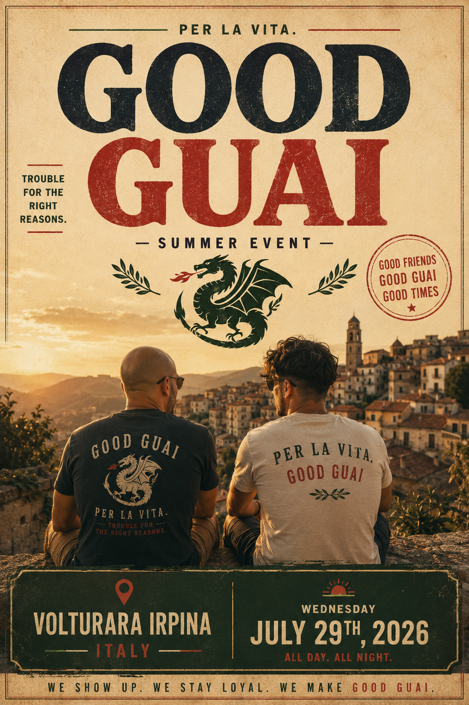
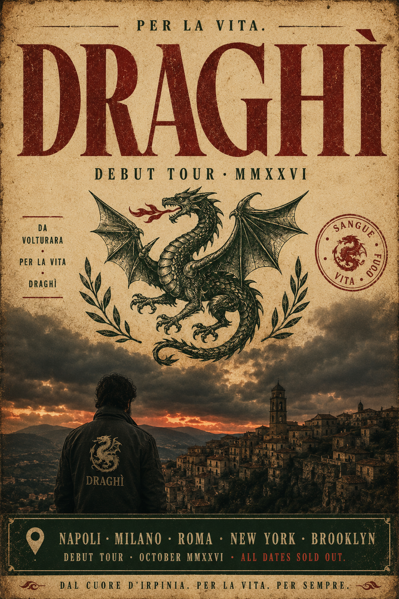

Your current picks
⭐ Starred
🤔 Maybe
Unreviewed names across all batches
Top picks · brand stress tests
A real name has to work as a logo on a marquee, an album cover, a Spotify header, and a festival lineup. Below: DRAGHÌ and GOOD GUAI tested across all four.
Marquee · EP artwork · Tour flyer
BOWERY BALLROOM · NYC
SAT · NOV 14
DRAGHÌ
W/ MARVENTO · DUSK
Marquee · NYC
BOWERY BALLROOM · NYC
SAT · NOV 14
GOOD GUAI
W/ MARVENTO · DUSK
Marquee · NYC
DRAGHÌ · EP 01
DRAGHÌ
PER LA VITA
EP artwork
GOOD GUAI · EP 01
GOOD
GUAI
GUAI
NEW YORK CITY
EP artwork
EAST COAST TOUR · MMXXVI
DRAGHÌ
PER LA VITA TOUR
NOV 12 · PHILADELPHIA · UNION TRANSFER
NOV 14 · NEW YORK · BOWERY BALLROOM
NOV 15 · BROOKLYN · MUSIC HALL
NOV 18 · BOSTON · ROYALE
NOV 20 · WASHINGTON · 9:30 CLUB
NOV 14 · NEW YORK · BOWERY BALLROOM
NOV 15 · BROOKLYN · MUSIC HALL
NOV 18 · BOSTON · ROYALE
NOV 20 · WASHINGTON · 9:30 CLUB
Tour flyer
EAST COAST TOUR · 2026
GOOD
GUAI
GUAI
FIRST RUN — SOLD OUT
NOV 12 · PHILADELPHIA · UNION TRANSFER
NOV 14 · NEW YORK · BOWERY BALLROOM
NOV 15 · BROOKLYN · MUSIC HALL
NOV 18 · BOSTON · ROYALE
NOV 20 · WASHINGTON · 9:30 CLUB
NOV 14 · NEW YORK · BOWERY BALLROOM
NOV 15 · BROOKLYN · MUSIC HALL
NOV 18 · BOSTON · ROYALE
NOV 20 · WASHINGTON · 9:30 CLUB
Tour flyer
Spotify artist page
✓
Verified Artist
DRAGHÌ
2,847,392 monthly listeners
New York
Brooklyn
Napoli
Milano
Boston
···
DRAGHÌ · Spotify artist page
✓
Verified Artist
GOOD GUAI
2,318,847 monthly listeners
New York
Brooklyn
Newark
Boston
Philadelphia
···
GOOD GUAI · Spotify artist page
Governors Ball festival lineup
JUNE 5–7, 2026 · RANDALL'S ISLAND · NEW YORK CITY
GOVERNORS BALL
PRESENTED BY FOUNDERS FEDERAL
TAME IMPALA · ROSALÍA · TYLER, THE CREATOR
MÅNESKIN · CHARLI XCX · SZA · KAYTRANADA · PHOEBE BRIDGERS
BLOND:ISH · CIGARETTES AFTER SEX · DRAGHÌ · FAYE WEBSTER · FRED AGAIN.. · JPEGMAFIA · LAUFEY · MK.GEE · PINKPANTHERESS · THE WAR ON DRUGS
BEABADOOBEE · COCO & CLAIR CLAIR · DOMI & JD BECK · EARL SWEATSHIRT · GENESIS OWUSU · JESSIE WARE · NAVY BLUE · OVERMONO · ROMY · SAYA GRAY · SHYGIRL · SUKI WATERHOUSE · YAYA BEY
DRAGHÌ · tier three of the Gov Ball lineup
JUNE 5–7, 2026 · RANDALL'S ISLAND · NEW YORK CITY
GOVERNORS BALL
PRESENTED BY FOUNDERS FEDERAL
TAME IMPALA · ROSALÍA · TYLER, THE CREATOR
MÅNESKIN · CHARLI XCX · SZA · KAYTRANADA · PHOEBE BRIDGERS
BLOND:ISH · CIGARETTES AFTER SEX · FAYE WEBSTER · FRED AGAIN.. · GOOD GUAI · JPEGMAFIA · LAUFEY · MK.GEE · PINKPANTHERESS · THE WAR ON DRUGS
BEABADOOBEE · COCO & CLAIR CLAIR · DOMI & JD BECK · EARL SWEATSHIRT · GENESIS OWUSU · JESSIE WARE · NAVY BLUE · OVERMONO · ROMY · SAYA GRAY · SHYGIRL · SUKI WATERHOUSE · YAYA BEY
GOOD GUAI · same tier in the same lineup
Concept posters · the campaign pair
One brand world, two registers. GOOD GUAI is the daylight, brotherhood, "trouble for the right reasons" register. DRAGHÌ is the dusk, mythic, "sangue · fuoco · vita" register. The shared elements — PER LA VITA tagline, dragon crest, Volturara Irpina origin — tie them into the same family.

Campaign diptych · both registers, one identity

Campaign diptych · alternate composition

GOOD GUAI · Volturara summer event

DRAGHÌ · debut tour
After the stress tests
Both names earn their place — the concept posters reveal why. GOOD GUAI carries the daylight, brotherhood register: warm, English-leaning, "trouble for the right reasons." DRAGHÌ carries the dusk, mythic register: Italian-leaning, headliner-scale, "sangue · fuoco · vita." Tied together by PER LA VITA as the shared tagline, the dragon as the shared mark, and Volturara Irpina as the shared origin, you have a brand range most artists never establish. The decision isn't which one wins — it's which one leads and which one supports. Either way, the campaign world holds together.